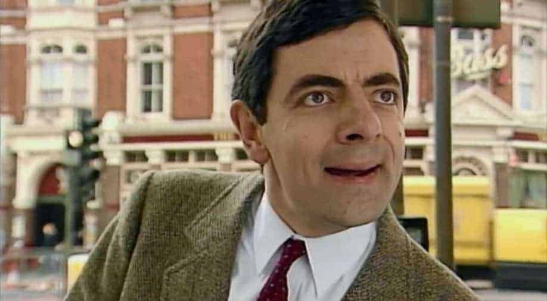

Biography
Rowan Atkinson (Born on 6 January 1955, Consett, England) is an English actor, comedian and writer. He played the title roles in the sitcoms Blackadder (1983-1989) and Mr. Bean (1990-1995), and in the film series Johnny English (2003-2018). Atkinson first came to prominence on the BBC sketch comedy show Not the Nine O'Clock News (1979-1982), receiving the 1981 British Academy Television Award for Best Entertainment Performance. .
| Film name | year of release |
|---|---|
| Never Say Never Again | 1983 |
| Dead on Time | 1983 |
| The Witches | 1990 |
| Hot Shots! Part Deux | 1993 |
Quotes
Never beg for a friendship or a relationship with anyone. If you don't receive the same efforts you give.Cut them off.